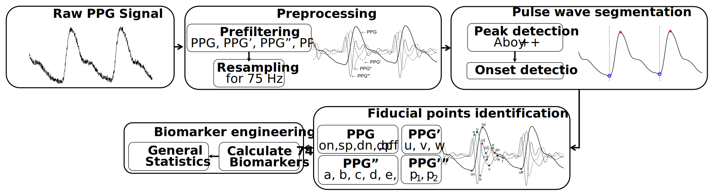

pyPPG toolbox documentation
A toolbox for finger photoplethysmogram (PPG) analysis, including beat detection, fiducial point detection, and comprehensive assessment of standard biomarkers.
If you use the pyPPG resource, please cite:
Goda, M. A., Charlton, P. H., & Behar, J. A. (2023). pyPPG: A Python toolbox for comprehensive photoplethysmography signal analysis. arXiv preprint arXiv:2309.13767., (The preprint is available HERE)
Introduction
pyPPG is a standardised toolbox to analyze long-term finger PPG recordings in real-time. The toolbox extracts state-of-the-art PPG biomarkers (i.e. pulse wave features) from PPG signals. The algorithms implemented in the pyPPG toolbox have been validated on freely available PPG databases. Consequently, pyPPG offers robust and comprehensive assessment of clinically relevant biomarkers from continuous PPG signals.
Description
The following steps are implemented in the pyPPG toolbox:
Loading a raw PPG signal: The toolbox can accept PPG signals in various file formats such as .mat, .txt, .csv, or .edf. These files should contain raw PPG data along with the corresponding sampling rate.
.mat: Data should be stored in two variables within the file: (i) ‘Fs’ representing the sampling frequency, and (ii) ‘Data’, a vector containing the raw PPG signal.
.txt: The raw PPG signal should be stored in tabular form (single tab or space-delimited), and you need to provide the sampling frequency as an input parameter to the script using ‘fs’.
.csv: This format stores raw PPG signal data with comma separation. Similar to .txt, the sampling frequency must be provided as an input parameter to the script using ‘fs’.
.edf: The European Data Format is supported, and it applies ‘Pleth’ channel by default. However, if using a different channel name, then the user needs to define it themselves.
Preprocessing: The raw PPG signal is filtered to remove noise and artifacts. Subsequently, the first, second, and third derivatives (PPG’, PPG’’, and PPG’”) of the PPG signal are computed and filtered. The resampling of the filtered PPG signal to 75 Hz is specifically performed for systolic peak detection.
Pulse wave segmentation: The toolbox employs a peak detector to identify the systolic peaks. It uses an improved version of a beat detection algorithm originally proposed in (Aboy et al. 2005). Based on the peak locations, the toolbox also detects the pulse onsets and offsets, which indicate the start and end of the PPG pulse waves.
Fiducial points identification: For each pulse wave, the toolbox detects a set of fiducial points.
Biomarker engineering: Based on the fiducial points, a set of 74 PPG digital biomarkers (i.e. pulse wave features) are calculated.
The pyPPG toolbox also provides an optional PPG signal quality index based on the Matlab implementation of the work by (Li et al. 2015).
The toolbox identifies individual pulse waves in a PPG signal by identifying systolic peaks (sp), and then identifying the pulse onset (on) and offset (off) on either side of each systolic peak which indicate the start and end of the pulse wave, respectively.

Installation
Available on pip, with the command: pip install pyPPG
pip project: https://pypi.org/project/pyPPG/
For more details see the pyPPG example code and pyPPG YouTube video
Requirements
Python Requirements:
Python == 3.10
scipy == 1.9.1
numpy == 1.23.2
dotmap == 1.3.30
pandas == 1.5.0
wfdb == 4.0.0
mne == 1.5.0
All the python requirements are installed when the toolbox is installed, so there is no need for any additional commands.
Validation and Benchmarking
For more details see the Validation and Benchmarking The fiducial point annotations and benchmarking results are accessible at 10.5281/zenodo.10523285.
Documentation
The main components
Software
An open-source algorithmic pyPPG toolbox, which loads a PPG signal, preprocesses it, segments individual pulse waves, identifies fiducial points, and calculates a set of biomarkers. This can be used within your own data analysis code using the pyPPG API.
Databases
The pyPPG signal analysis is based on the following datasets:
Further PPG datasets:
All PPG measures can be further adapted for the analysis for efficient heart rate measurement as well as health assessment with clinically relevant biomarkers.
Acknowledgments
This work was supported by the Estate of Zofia (Sophie) Fridman and funding from the Israel Innovation Authority, COST Action CA18216 VascAgeNet, supported by COST (European Cooperation in Science and Technology), and the British Heart Foundation (grant FS/20/20/34626).